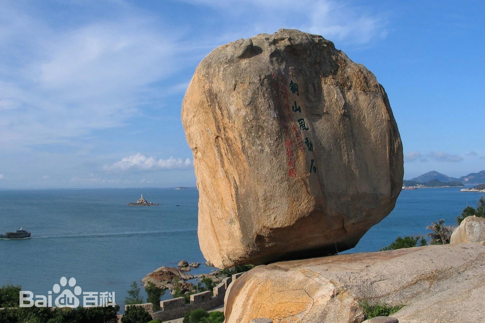
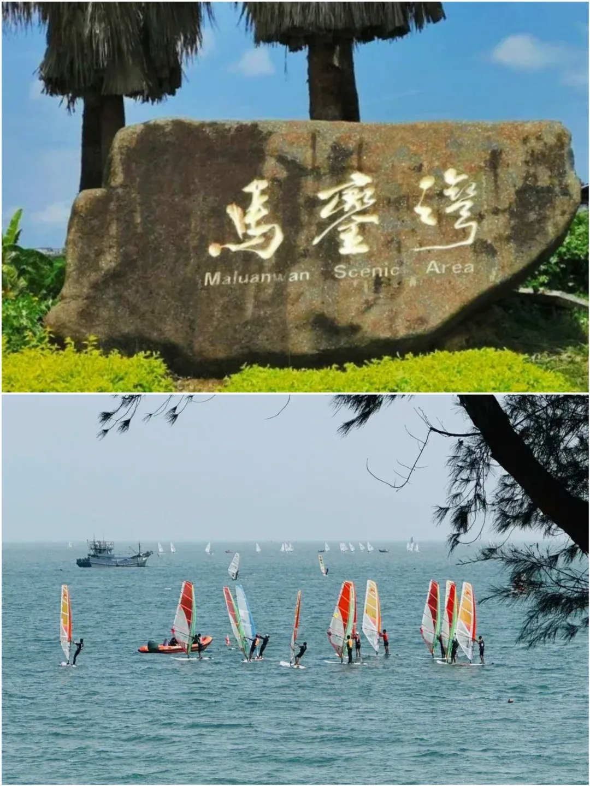
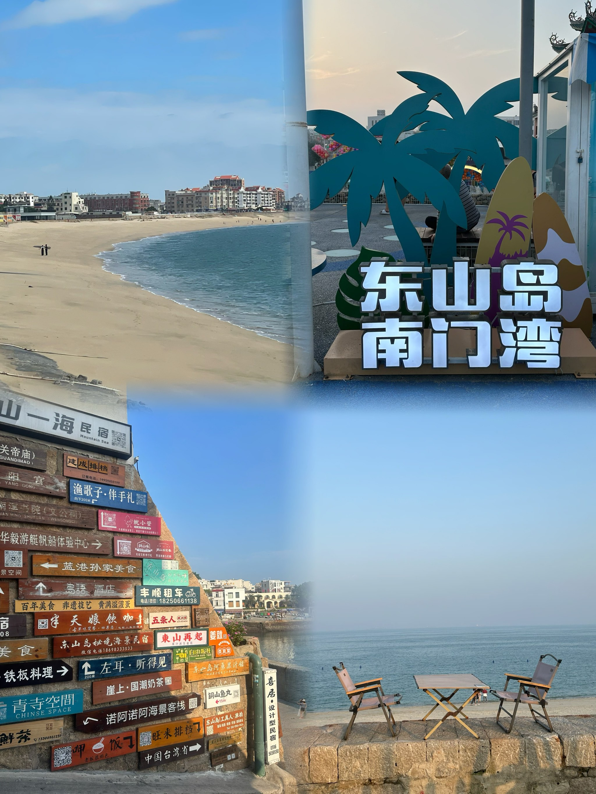
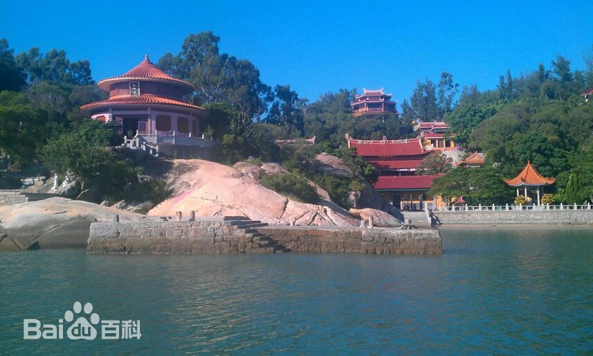

风动石景区

风动石景区是东山岛的标志性景点，以一块重达600多吨却能左右摇摆而不倒的“天下第一奇石”闻名。景区内还有铜陵关帝庙、宝智寺、东山县博物馆等人文景观，融合了自然与历史的双重魅力。
马銮湾


马銮湾被誉为“中国夏威夷”，拥有洁白细软的沙滩和清澈的海水。海湾呈月牙形，是天然的海滨浴场，也是国家帆船帆板训练基地。游客可以在这里享受阳光、沙滩和大海的完美融合，参与帆船、潜水等水上活动。
金銮湾

金銮湾的沙滩平滑如镜，海天一色，被誉为“海上玻利维亚”。这里的沙子细软柔滑，海水清澈见底，是观赏日落和体验水上活动的理想之地。
南门湾

南门湾因电影《左耳》的取景而闻名，一边是蔚蓝的大海，一边是古朴的渔村，色彩斑斓的房子与海岸线相映成趣。这里可以体验到宁静的海岛生活，感受渔民的日常劳作，品尝新鲜的海鲜大餐。
东门屿

东门屿是东山岛的著名景点之一，以其独特的海岛风光和丰富的历史遗迹吸引游客。岛上有东明寺、文峰塔等古迹，游客可以在这里欣赏到美丽的海景和独特的海岛生态系统。
特色简介
东山岛，福建省第二大岛，位于漳州市东山县，四面环海，海岸线绵长，海域辽阔。这里碧海蓝天，沙滩细软，海岛文化丰富，是休闲度假和海岛游的绝佳选择。岛上的主要景点有风动石景区、马銮湾景区等。风动石被誉为“天下第一奇石”，重达600多吨，却能左右摇摆而不倒；马銮湾则以其蓝天碧海、白净沙滩而闻名，是放松身心的理想之地。